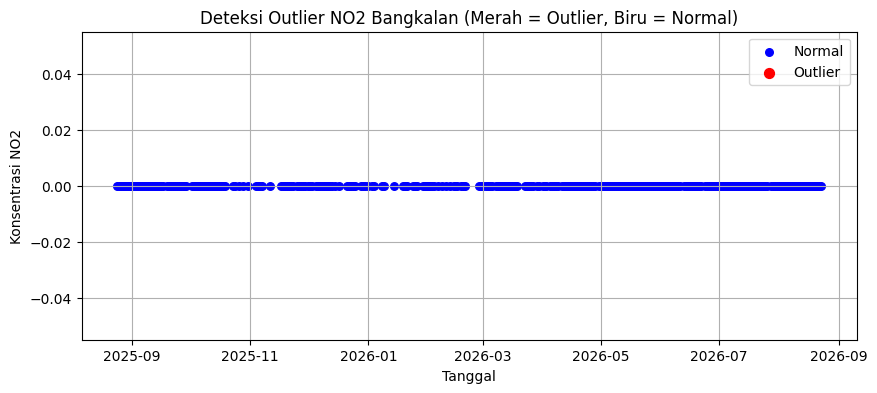

Business Understanding & Data Understanding Kabupaten Bangkalan#
Dokumen ini merangkum dua tahap awal analisis kualitas udara di Kabupaten Bangkalan, Jawa Timur, mengikuti kerangka kerja CRISP-DM: Business Understanding (memahami masalah dan tujuan) dan Data Understanding (mengumpulkan, mengeksplorasi, dan menilai kualitas data).
1. Business Understanding#
1.1 Latar Belakang#
Kabupaten Bangkalan terletak di ujung barat Pulau Madura dan menjadi kabupaten yang paling terdampak langsung oleh Jembatan Suramadu, yang menghubungkan Madura dengan Surabaya sejak beroperasi pada tahun 2009. Sejak saat itu, arus kendaraan dari Surabaya yang melintas ke Madura terpusat melalui Bangkalan, meningkatkan potensi emisi dari sektor transportasi di wilayah ini.
Selain faktor transportasi, Bangkalan juga memiliki potensi sumber emisi lain:
Pertumbuhan kawasan industri di beberapa kecamatan yang didorong oleh aksesibilitas baru pasca-Suramadu.
Rencana fasilitas stockpile (gudang penyangga) batu bara di pesisir utara (Kecamatan Klampis) untuk menopang kebutuhan industri manufaktur Jawa Timur aktivitas bongkar-muat batu bara di daerah lain yang serupa diketahui memicu keluhan warga terkait debu dan polusi udara.
Aktivitas pertanian dan perikanan yang tetap menjadi sumber emisi metana (CH4) skala lokal.
Kombinasi faktor transportasi, potensi industrialisasi, dan aktivitas agraris ini menjadikan pemantauan kualitas udara di Kabupaten Bangkalan relevan untuk dilakukan secara berkala, sebagai baseline sebelum pembangunan lebih lanjut berlangsung.
1.2 Tujuan Analisis#
Proyek ini bertujuan untuk:
Memantau tren konsentrasi polutan udara utama (NO2, CO, SO2, CH4) di Kabupaten Bangkalan sepanjang periode 24 Agustus 2025 24 Agustus 2026 menggunakan data penginderaan jauh Sentinel-5P.
Mengidentifikasi periode dengan konsentrasi tidak wajar (anomali/outlier) yang dapat mengindikasikan kejadian tertentu (mis. lonjakan aktivitas transportasi, kebakaran lahan, atau gangguan pada data satelit itu sendiri).
Menyediakan baseline data kualitas udara yang dapat dipakai sebagai pembanding di masa depan, terutama seiring rencana pertumbuhan kawasan industri di wilayah pesisir.
Menyusun alur kerja (pipeline) yang reusable mulai dari ekstraksi data satelit, pembersihan data, hingga deteksi anomali sehingga dapat diterapkan kembali untuk kabupaten/kota lain atau periode waktu berikutnya.
1.3 Apa itu Indeks Kualitas Udara (AQI)?#
Indeks Kualitas Udara (Air Quality Index / AQI) adalah standar pengukuran untuk melaporkan seberapa bersih atau tercemarnya udara di suatu wilayah. AQI mengubah konsentrasi polutan menjadi angka pada skala 0–500, di mana angka lebih rendah menandakan kualitas udara lebih baik.
Rentang AQI |
Kategori |
Dampak Kesehatan |
|---|---|---|
0 – 50 |
Baik |
Kualitas udara memuaskan, risiko polusi rendah |
51 – 100 |
Sedang |
Kualitas udara dapat diterima |
101 – 150 |
Tidak Sehat bagi Kelompok Sensitif |
Anak, lansia, dan penderita asma mulai terdampak |
151 – 200 |
Tidak Sehat |
Seluruh populasi mulai mengalami efek kesehatan |
201 – 300 |
Sangat Tidak Sehat |
Peringatan kesehatan untuk seluruh populasi |
301 – 500 |
Berbahaya |
Kondisi darurat kesehatan masyarakat |
1.4 Polutan yang Dianalisis#
a. NO2 (Nitrogen Dioksida)#
Gas berwarna coklat kemerahan dengan bau menyengat. Sumber utama:
Emisi kendaraan bermotor (pembakaran bahan bakar fosil).
Aktivitas industri berbasis pembakaran.
Pembangkit listrik berbahan bakar fosil.
Dampak kesehatan: iritasi saluran pernapasan, meningkatkan risiko infeksi pernapasan, memperburuk asma. Di Bangkalan, NO2 relevan dipantau karena kepadatan lalu lintas di sekitar akses Suramadu.
b. CO (Karbon Monoksida)#
Gas tidak berwarna dan tidak berbau, sangat berbahaya. Sumber utama:
Pembakaran tidak sempurna bahan bakar kendaraan.
Asap industri manufaktur.
Pembakaran biomassa (sampah, kayu bakar).
Dampak kesehatan: mengikat hemoglobin lebih kuat dari oksigen sehingga menyebabkan kekurangan oksigen pada organ tubuh, pusing, mual, dan pada paparan tinggi dapat menyebabkan kematian.
c. SO2 (Sulfur Dioksida)#
Gas tak berwarna dengan bau tajam. Sumber utama:
Pembakaran batu bara pada industri dan pembangkit listrik.
Proses industri seperti peleburan logam dan pemurnian minyak bumi.
Emisi kendaraan berbahan bakar tinggi sulfur.
Dampak kesehatan: iritasi mata dan tenggorokan, memperburuk asma dan bronkitis, serta berkontribusi pada hujan asam. Polutan ini penting dipantau di Bangkalan mengingat rencana aktivitas bongkar-muat batu bara di pesisir utara.
d. CH4 (Metana)#
Gas rumah kaca yang sangat efektif memerangkap panas. Sumber utama:
Aktivitas pertanian pencernaan hewan ternak dan sawah.
Limbah organik pembusukan sampah di TPA.
Emisi industri kebocoran gas alam dan proses industri.
Dampak lingkungan: CH4 sekitar 80 kali lebih kuat dari CO2 dalam memerangkap panas jangka pendek, sehingga berkontribusi signifikan pada perubahan iklim.
1.5 Ruang Lingkup#
Wilayah: Kabupaten Bangkalan, Jawa Timur (bounding box, lihat Bagian 2.3).
Polutan: NO2, CO, SO2, CH4.
Periode: 24 Agustus 2025 24 Agustus 2026 (deret waktu harian).
Sumber data: Sentinel-5P L2 (TROPOMI) via Copernicus Data Space Ecosystem.
Keluaran: deret waktu harian per polutan, visualisasi tren, dan daftar tanggal dengan anomali/outlier terdeteksi.
2. Data Understanding#
Data Understanding adalah tahap untuk mengumpulkan, mengeksplorasi, dan menilai kualitas data yang akan digunakan dalam analisis kualitas udara di Kabupaten Bangkalan.
2.1 Sumber Data#
Item |
Keterangan |
|---|---|
Sumber |
Copernicus Data Space Ecosystem |
Layanan |
openEO |
Server |
|
Produk / Koleksi |
Sentinel-5P L2 ( |
Polutan |
NO2, CO, SO2, CH4 |
Periode |
24 Agustus 2025 – 24 Agustus 2026 |
Lokasi |
Kabupaten Bangkalan, Jawa Timur |
2.2 Koneksi dan Otentikasi#
Koneksi ke server openEO dilakukan menggunakan akun Copernicus Data Space Ecosystem melalui device code flow:
import openeo
connection = openeo.connect("openeo.dataspace.copernicus.eu").authenticate_oidc()
Saat dijalankan, klien akan menampilkan tautan login dan kode singkat. Setelah login berhasil di browser, koneksi akan terautentikasi secara otomatis untuk seluruh permintaan berikutnya.
Catatan: Karena backend Sentinel Hub untuk koleksi
SENTINEL_5P_L2hanya mengizinkan satu band (polutan) per proses, ekstraksi dilakukan secara terpisah untuk NO2, CO, SO2, dan CH4 (lihat1-ekstraksi-data.ipynb).
2.3 Area of Interest (AOI) Kabupaten Bangkalan#
AOI didefinisikan sebagai bounding box yang mencakup wilayah administratif Kabupaten Bangkalan:
Atribut |
Nilai |
Keterangan |
|---|---|---|
|
112.671 |
Longitude terkecil (batas kiri) |
|
113.116 |
Longitude terbesar (batas kanan) |
|
-7.227 |
Latitude terkecil (batas bawah) |
|
-6.848 |
Latitude terbesar (batas atas) |
spatial_extent pada load_collection menggunakan bounding box
(west, south, east, north) di atas. Untuk agregasi spasial pada
aggregate_spatial, bounding box yang sama direpresentasikan sebagai
polygon GeoJSON tertutup:
bangkalan_polygon = {
"type": "Polygon",
"coordinates": [[
[112.671, -7.227], # kiri-bawah (SW)
[113.116, -7.227], # kanan-bawah (SE)
[113.116, -6.848], # kanan-atas (NE)
[112.671, -6.848], # kiri-atas (NW)
[112.671, -7.227], # kembali ke titik awal
]],
}
2.4 Peta Interaktif Area Bangkalan#
Peta di bawah menampilkan bounding box AOI, titik pusat, serta beberapa titik acuan kontekstual (akses Suramadu, area pesisir Klampis) yang relevan sebagai potensi sumber emisi. Peta mendukung dua basemap (jalan & citra satelit) yang bisa dipilih lewat kontrol layer di kanan atas.
2.5 Proses Ekstraksi Data#
Untuk setiap polutan, data dimuat, diagregasi harian (mean), lalu diagregasi spasial (mean) di dalam polygon AOI:
s5 = connection.load_collection(
"SENTINEL_5P_L2",
temporal_extent=["2025-08-24", "2026-08-24"],
spatial_extent=bbox,
bands=["NO2"], # ganti sesuai polutan: NO2 / CO / SO2 / CH4
)
s5 = s5.aggregate_temporal_period(reducer="mean", period="day")
s5 = s5.aggregate_spatial(reducer="mean", geometries=bangkalan_polygon)
job = s5.execute_batch(
title="NO2 Bangkalan",
outputfile="../data/nc/bangkalan_NO2.nc",
)
Proses ini dijalankan sebagai batch job di server openEO dan dapat dipantau melalui openEO Web Editor. Hasilnya kemudian dikonversi menjadi CSV dengan skema berikut:
date |
<POLUTAN> |
|---|---|
2025-08-24 |
0.000123 |
2025-08-25 |
0.000119 |
… |
… |
Detail lengkap kode ekstraksi & konversi tersedia di
1-ekstraksi-data.ipynb.
2.6 Identifikasi Kualitas Data#
Sesuai prinsip CRISP-DM, tahap Data Understanding hanya menemukan dan
mencatat masalah kualitas data (missing values, outlier, noise).
Penanganannya (imputasi, penghapusan, dsb.) dilakukan pada tahap
selanjutnya (Data Preparation) lihat 2-analisis-bangkalan.ipynb.
a. Missing Values#
Contoh pengecekan untuk NO2 (pola yang sama berlaku untuk CO, SO2, CH4):
Jumlah missing value pada data NO2 Bangkalan : 0
Jumlah data terisi (valid) pada data NO2 Bangkalan : 292
Missing values pada data Sentinel-5P umumnya terjadi karena tutupan awan atau tidak adanya lintasan satelit pada hari tertentu.
b. Outliers#
Deteksi outlier dilakukan menggunakan Isolation Forest dengan
contamination=0.05 (5%), setelah baris dengan nilai kosong dibuang
(dropna) agar populasi perhitungan selaras:
Jumlah outlier pada data NO2 Bangkalan : 0
Jumlah data normal pada data NO2 Bangkalan : 292

Pola kode yang sama diulang untuk bangkalan_CO.csv,
bangkalan_SO2.csv, dan bangkalan_CH4.csv cukup mengganti nama file
dan nama kolom polutan.
c. Noise#
Bagian ini akan diisi setelah pemeriksaan lebih lanjut terhadap
kemungkinan derau (noise) instrumen pada data Sentinel-5P, misalnya nilai
dengan flag kualitas rendah (qa_value di bawah ambang tertentu) yang
belum difilter pada tahap ekstraksi.
Ringkasan#
Tahap |
Status |
Referensi |
|---|---|---|
Business Understanding |
Selesai tujuan & konteks wilayah terdefinisi |
Bagian 1 |
Data Understanding sumber & AOI |
Selesai |
Bagian 2.1 – 2.4 |
Data Understanding ekstraksi |
Membutuhkan eksekusi notebook |
|
Data Understanding kualitas data |
Membutuhkan data hasil ekstraksi |
|
Setelah notebook ekstraksi dijalankan dan file CSV tersedia di
../data/csv/, seluruh sel kode pada Bagian 2.6 di atas akan otomatis
menghasilkan angka dan grafik yang sebenarnya saat halaman ini dibangun
ulang oleh Jupyter Book.
Kesimpulan#
Business Understanding. Kabupaten Bangkalan memiliki karakteristik yang menjadikannya relevan untuk dipantau kualitas udaranya: posisinya sebagai gerbang utama Jembatan Suramadu meningkatkan potensi emisi dari sektor transportasi, sementara rencana pertumbuhan kawasan industri dan fasilitas stockpile batu bara di pesisir utara berpotensi menambah beban polutan seperti SO2 dan partikel debu di masa depan. Empat polutan yang dipilih NO2, CO, SO2, dan CH4 mewakili sumber emisi yang berbeda (transportasi, industri, dan aktivitas agraris), sehingga analisis ini dapat menjadi baseline kualitas udara sebelum pembangunan lebih lanjut berlangsung, sekaligus alat pemantauan tren dan deteksi anomali yang bisa dijalankan berkala.
Data Understanding. Data Sentinel-5P L2 yang diakses melalui openEO
Copernicus Data Space Ecosystem terbukti dapat diambil untuk wilayah dan
rentang waktu yang ditentukan (24 Agustus 2025 – 24 Agustus 2026), dengan
catatan penting bahwa ekstraksi harus dilakukan per polutan karena
keterbatasan backend. Area of Interest yang didefinisikan dalam bentuk
bounding box dan polygon sudah divalidasi secara visual melalui peta
interaktif, dan mencakup titik-titik kontekstual yang relevan (akses
Suramadu, pesisir Klampis). Potensi masalah kualitas data yang perlu
diantisipasi pada tahap Data Preparation berikutnya adalah:
missing values (akibat tutupan awan/lintasan satelit yang tidak lengkap)
dan outlier (yang akan dideteksi dengan Isolation Forest,
contamination=0.05). Data dinyatakan siap dianalisis lebih lanjut
setelah kedua isu ini ditangani pada 2-analisis-bangkalan.ipynb.